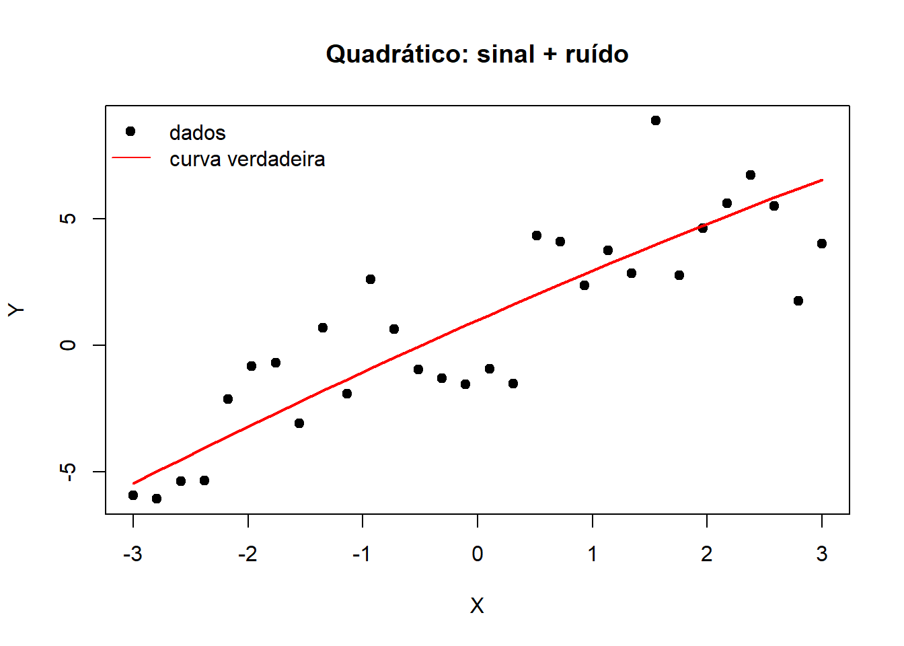
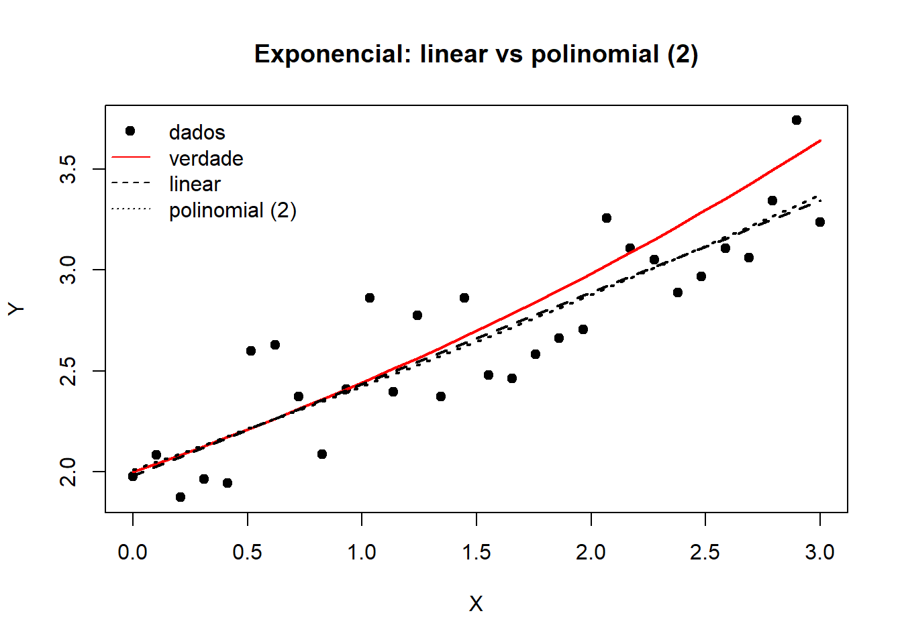

# Preparação do ambiente (simples e reprodutível)
set.seed(0)3 Exercícios e Atividades de Consolidação
3.1 Exercícios conceituais
Ao transformar um problema do mundo real em um modelo matemático ou estatístico, é necessário definir variáveis e relações formais.
- O que significa “traduzir um problema real” em linguagem matemática?
- Como a escolha das variáveis influencia o tipo de resposta que o modelo pode oferecer?
- Dê um exemplo em que a escolha inadequada das variáveis leve a conclusões limitadas ou equivocadas.
- O que significa “traduzir um problema real” em linguagem matemática?
Considere um problema de crescimento populacional ao longo do tempo.
- Explique a diferença conceitual entre um modelo estático e um modelo dinâmico nesse contexto.
- Por que a inclusão explícita do tempo altera a estrutura matemática do modelo?
- Explique a diferença conceitual entre um modelo estático e um modelo dinâmico nesse contexto.
Em muitos fenômenos reais, diferentes modelos podem ser propostos para descrever o mesmo problema.
- Quais critérios podem ser utilizados para escolher entre dois modelos concorrentes?
- Explique como o critério da parcimônia atua nesse processo de escolha.
- Por que modelos excessivamente complexos podem ser problemáticos, mesmo quando ajustam melhor os dados?
- Quais critérios podem ser utilizados para escolher entre dois modelos concorrentes?
Explique a afirmação: “um modelo não é a realidade; é uma aproximação útil”.
- O que significa equilíbrio entre realismo e simplicidade?
- Por que todo modelo envolve escolhas e simplificações?
- Dê um exemplo em que um modelo necessariamente ignora parte da complexidade do fenômeno.
- O que significa equilíbrio entre realismo e simplicidade?
Considere as duas estruturas apresentadas no capítulo:
\[Y = 2X\]
e
\[Y = 2X + \varepsilon.\]
- Diferencie conceitualmente modelo determinístico e modelo estatístico.
- Explique o papel de \(\varepsilon\) na segunda equação.
- Liste três possíveis fontes para \(\varepsilon\).
- Por que, no modelo estatístico, buscamos uma tendência média e não uma igualdade exata?
- Diferencie conceitualmente modelo determinístico e modelo estatístico.
O capítulo afirma que a regressão modela a média condicional:
\[E(Y \mid X).\]
- Explique o que significa média condicional em linguagem intuitiva.
- Mostre como a ideia de \(E(Y \mid X)\) está relacionada à decomposição
\[Y = \text{sinal} + \text{ruído}.\]
- É possível que um valor observado de \(Y\) esteja distante de \(E(Y \mid X)\) e, ainda assim, o modelo esteja adequado? Justifique.
- Explique o que significa média condicional em linguagem intuitiva.
O texto apresenta duas formas gerais de modelagem:
\[Y = f(X) + \varepsilon\]
e
\[Y = f(X)\cdot \varepsilon.\]
- Diferencie erro aditivo e erro multiplicativo.
- Em que tipo de fenômeno o erro tende a ser proporcional ao nível médio?
- Diferencie erro aditivo e erro multiplicativo.
Sobre o ciclo da modelagem:
- Explique por que o processo de modelagem é iterativo.
- Diferencie estimação, validação e análise de sensibilidade.
- Dê um exemplo de situação em que, após ajustar o modelo, seria necessário voltar e modificar hipóteses ou forma funcional.
- Explique por que o processo de modelagem é iterativo.
O capítulo mostra que nem toda relação entre \(X\) e \(Y\) é linear.
- Por que correlação linear elevada não garante especificação correta do modelo?
- Dê um exemplo conceitual de relação não linear em que o coeficiente de correlação de Pearson possa ser próximo de zero.
- O que significa dizer que há “erro sistemático ao longo de \(X\)”?
- Por que correlação linear elevada não garante especificação correta do modelo?
Sobre associação e causalidade:
- Explique a diferença entre associação estatística e causalidade.
- Liste duas razões pelas quais um coeficiente estimado pode ser estatisticamente significativo e ainda não representar um efeito causal.
- Que tipo de informação adicional (teórica ou experimental) seria necessária para sustentar uma interpretação causal?
- Sobre previsão e extrapolação:
- Diferencie interpolação e extrapolação.
- Por que extrapolar pode ser arriscado mesmo quando o ajuste parece bom no intervalo observado?
- Dê um exemplo aplicado em que extrapolação seria particularmente problemática.
- Escolha um dos contextos aplicados citados no capítulo.
- Defina uma variável resposta \(Y\) e pelo menos três variáveis explicativas \(X_1, X_2, X_3\).
- Indique se o modelo conceitual seria mais plausivelmente aditivo ou multiplicativo e justifique.
- Liste duas suposições que você consideraria críticas para interpretar os resultados.
- Reflita sobre a seguinte estrutura geral:
\[Y = f(X) + \varepsilon.\]
- O que significa assumir que \(E(\varepsilon \mid X) = 0\)?
- Por que essa hipótese é central para interpretar os coeficientes como efeitos médios condicionais?
- O que pode acontecer se essa hipótese não for satisfeita?
As respostas devem ser redigidas de forma argumentativa, conectando explicitamente os conceitos apresentados no capítulo.
3.2 Atividades computacionais
Esta atividade tem como objetivo consolidar os conceitos estudados ao longo do capítulo 2 por meio de simulações controladas. A proposta é investigar, de forma sistemática, como diferentes estruturas funcionais (linear, quadrática, exponencial e potência) se comportam sob ruído e como o ajuste por mínimos quadrados responde a essas situações.
Em todos os exercícios:
- Gere os dados conforme indicado no código.
- Produza os gráficos solicitados.
- Ajuste os modelos especificados.
- Responda às questões de forma argumentativa, conectando os resultados aos conceitos de sinal, ruído, forma funcional e especificação do modelo.
Objetivo: simular dados sob diferentes modelos, visualizar dispersões, calcular correlações e ajustar modelos via MQO (OLS), comparando a curva verdadeira que gerou os dados com o ajuste estimado.
- Preparação do Ambiente
- Simular dados lineares simples
# 2) Simular dados lineares simples
n <- 30
x <- seq(0, 10, length.out = n)
beta0 <- 2
beta1 <- 3
sigma <- 5
sinal <- beta0 + beta1*x
y <- sinal + rnorm(n, mean = 0, sd = sigma)
# Visualização: pontos + reta verdadeira
plot(x, y, pch = 19, xlab = "X", ylab = "Y",
main = "Linear: sinal + ruído")
lines(x, sinal, col = "red", lwd = 2)
legend("topleft", legend = c("dados", "reta verdadeira"),
pch = c(19, NA), lty = c(NA, 1), col = c("black", "red"), bty = "n")
# Correlação
cor_xy <- cor(x, y)
cor_xy[1] 0.8794497- Ajustar reta por MQO
# 3) Ajustar reta por MQO (OLS)
mod_lin <- lm(y ~ x)
# Resumo do ajuste
summary(mod_lin)
Call:
lm(formula = y ~ x)
Residuals:
Min 1Q Median 3Q Max
-8.6607 -2.8240 -0.1325 3.0743 11.4207
Coefficients:
Estimate Std. Error t value Pr(>|t|)
(Intercept) 3.4090 1.6321 2.089 0.0459 *
x 2.7402 0.2803 9.777 1.58e-10 ***
---
Signif. codes: 0 '***' 0.001 '**' 0.01 '*' 0.05 '.' 0.1 ' ' 1
Residual standard error: 4.582 on 28 degrees of freedom
Multiple R-squared: 0.7734, Adjusted R-squared: 0.7653
F-statistic: 95.58 on 1 and 28 DF, p-value: 1.581e-10# Visualização: dados + reta verdadeira + reta ajustada
plot(x, y, pch = 19, xlab = "X", ylab = "Y",
main = "Linear: reta verdadeira vs MQO")
lines(x, sinal, col = "red", lwd = 2)
lines(x, fitted(mod_lin), col = "darkgreen", lwd = 2, lty = 2)
legend("topleft",
legend = c("dados", "reta verdadeira", "ajuste MQO"),
pch = c(19, NA, NA),
lty = c(NA, 1, 2),
col = c("black", "red", "darkgreen"),
bty = "n")
Perguntas – linear a) A correlação está próxima de 1? Por quê?
b) O coeficiente estimado da inclinação \(\beta_1\) ficou próximo do valor verdadeiro?
c) Experimente:
- Aumente o ruído para rnorm(30, mean = 0, sd = 10) e veja o que acontece com a correlação e o ajuste.
- Reduza o ruído para rnorm(30, mean = 0, sd = 2) e observe a diferença.
- Modelo polinomial quadrático
# 4) Modelo polinomial quadrático (sinal não linear)
n <- 30
x <- seq(-3, 3, length.out = n)
sigma <- 2
sinal <- 1 + 2*x - 0.05*x^2
y <- sinal + rnorm(n, mean = 0, sd = sigma)
# Visualização: pontos + curva verdadeira
plot(x, y, pch = 19, xlab = "X", ylab = "Y",
main = "Quadrático: sinal + ruído")
lines(x, sinal, col = "red", lwd = 2)
legend("topleft", legend = c("dados", "curva verdadeira"),
pch = c(19, NA), lty = c(NA, 1), col = c("black", "red"), bty = "n")
# Correlação (linear) pode enganar em relação não linear
cor(x, y)[1] 0.8480377Perguntas – Quadrático a) A correlação de Pearson reflete bem a relação entre x e y neste caso? é linear?
b) Aumente o coeficiente do termo quadrático: troque -0.05 por -0.5. E agora?
c) Altere o sinal do termo quadrático: use +0.5. Como fica a concavidade da curva?
d) Aumente o ruído (ex.: sigma <- 4). O que acontece com a correlação e a visualização da curva?
- Modelo Exponencial
# 5) Modelo exponencial com ruído multiplicativo
n <- 30
x <- seq(0, 3, length.out = n)
a <- 2
b <- 0.2
sigma_log <- 0.2 # ruído no log (multiplicativo em Y)
sinal <- a * exp(b*x)
y <- sinal * exp(rnorm(n, mean = 0, sd = sigma_log))
# Visualização
plot(x, y, pch = 19, xlab = "X", ylab = "Y",
main = "Exponencial: sinal + ruído multiplicativo")
lines(x, sinal, col = "red", lwd = 2)
legend("topleft", legend = c("dados", "curva verdadeira"),
pch = c(19, NA), lty = c(NA, 1), col = c("black", "red"), bty = "n")
# Correlação
cor(x, y)[1] 0.8255609Perguntas – Exponencial a) A curva gerada com \(b = 0.2\) parece linear? A correlação confirma isso?
b) Aumente o parâmetro de crescimento para \(b = 0.8\). A curva agora se afasta de uma reta?
c) Aumente ainda mais para \(b = 1.5\). Como fica a forma da curva e a correlação de Pearson?
d) Reduza o ruído (0.2 → 0.05). O que muda na dispersão e na clareza da forma exponencial?
- Modelo Potência
# 6) Modelo potência com ruído multiplicativo
n <- 30
x <- seq(0.5, 3, length.out = n)
alpha <- 1.5
expoente <- 1.1
sigma_log <- 0.1
sinal <- alpha * (x^expoente)
y <- sinal * exp(rnorm(n, mean = 0, sd = sigma_log))
# Visualização
plot(x, y, pch = 19, xlab = "X", ylab = "Y",
main = "Potência: sinal + ruído multiplicativo")
lines(x, sinal, col = "red", lwd = 2)
legend("topleft", legend = c("dados", "curva verdadeira"),
pch = c(19, NA), lty = c(NA, 1), col = c("black", "red"), bty = "n")
# Correlação
cor(x, y)[1] 0.9769569Perguntas – Potência a) Com expoente \(1.1\), a curva parece linear? A correlação confirma isso?
b) Aumente o expoente para \(2.5\). A curva agora se distancia de uma reta?
c) Teste com um expoente ainda maior, por exemplo \(3.5\). O que muda na curvatura e na dispersão dos pontos?
d) Dobre o ruído (0.1 → 0.2). O que acontece com a clareza da curva e com a correlação de Pearson?
- Exponencial — linear vs. polinomial
# 7) Exponencial — comparar ajuste linear vs polinomial (grau 2)
n <- 30
x <- seq(0, 3, length.out = n)
a <- 2.0
b <- 0.2 # depois teste 0.8 e 1.5
sigma_log <- 0.1
sinal <- a * exp(b*x)
y <- sinal * exp(rnorm(n, mean = 0, sd = sigma_log))
# Ajustes
mod_lin <- lm(y ~ x)
mod_poly <- lm(y ~ x + I(x^2))
# Comparação visual
plot(x, y, pch = 19, xlab = "X", ylab = "Y",
main = "Exponencial: linear vs polinomial (2)")
lines(x, sinal, col = "red", lwd = 2)
lines(x, fitted(mod_lin), lwd = 2, lty = 2)
lines(x, fitted(mod_poly), lwd = 2, lty = 3)
legend("topleft",
legend = c("dados", "verdade", "linear", "polinomial (2)"),
pch = c(19, NA, NA, NA),
lty = c(NA, 1, 2, 3),
col = c("black", "red", "black", "black"),
bty = "n")
# R² (comparação rápida)
c(R2_linear = summary(mod_lin)$r.squared,
R2_polinomial2 = summary(mod_poly)$r.squared) R2_linear R2_polinomial2
0.7751012 0.7760694 Perguntas — Exponencial (começando quase reta) a) Com b = 0.2, os ajustes linear e polinomial (2) parecem semelhantes? O R² confirma? b) Aumente b para 0.8 e depois 1.5. Como mudam o gráfico e os R²? Qual ajuste passa a representar melhor a curva? c) Reduza o ruído para sigma_log <- 0.05. Fica mais fácil perceber a diferença entre o linear e o polinomial quando b é maior?
- Potência — linear vs. polinomial
# 8) Potência — comparar ajuste linear vs polinomial (grau 2)
n <- 30
x <- seq(0.5, 3, length.out = n)
alpha <- 1.5
expoente <- 1.1 # depois teste 2.5 e 3.5
sigma_log <- 0.1
sinal <- alpha * (x^expoente)
y <- sinal * exp(rnorm(n, mean = 0, sd = sigma_log))
# Ajustes
mod_lin <- lm(y ~ x)
mod_poly <- lm(y ~ x + I(x^2))
# Comparação visual
plot(x, y, pch = 19, xlab = "X", ylab = "Y",
main = "Potência: linear vs polinomial (2)")
lines(x, sinal, col = "red", lwd = 2)
lines(x, fitted(mod_lin), lwd = 2, lty = 2)
lines(x, fitted(mod_poly), lwd = 2, lty = 3)
legend("topleft",
legend = c("dados", "verdade", "linear", "polinomial (2)"),
pch = c(19, NA, NA, NA),
lty = c(NA, 1, 2, 3),
col = c("black", "red", "black", "black"),
bty = "n")
# R² (comparação rápida)
c(R2_linear = summary(mod_lin)$r.squared,
R2_polinomial2 = summary(mod_poly)$r.squared) R2_linear R2_polinomial2
0.9422860 0.9487419 Perguntas — Potência (começando quase reta)
Com expoente = 1.1, os ajustes linear e polinomial (2) parecem semelhantes? O R² confirma?
Aumente o expoente para 2.5 e depois 3.5. Como mudam o gráfico e os R²? Qual ajuste passa a representar melhor a curva?
Dobre o ruído para
sigma_log <- 0.2. Fica mais difícil perceber a diferença entre o linear e o polinomial quando o expoente é maior?